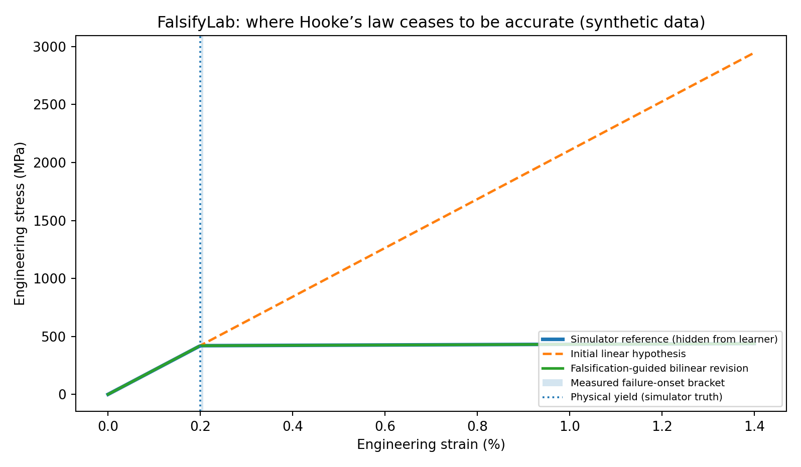
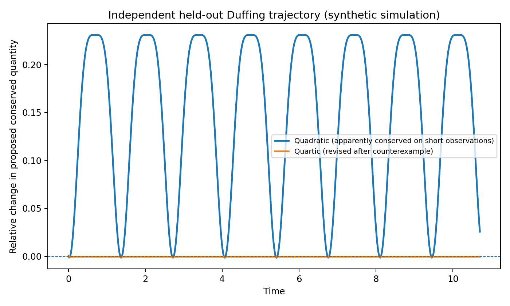

FalsifyLab
A physical law can fit the observations and still fail outside the conditions where it was measured. FalsifyLab tests the boundary, searches for counterexamples, and audits whether a revised model generalizes.
How far does Hooke’s law hold?
Fit a linear stress–strain hypothesis to small deformations, then actively narrow the strain at which its error exceeds a declared 10 MPa threshold. Compare equal-budget selection strategies over 30 independent synthetic noise seeds; fit a predeclared bilinear revision and test it on held-out observations.

This is a threshold-defined approximation breakdown, not a statistical confidence interval or a general physical yield estimator. Binary search has a monotonicity advantage on this synthetic model. The modeling problem is constructed, not a discovery of a new material.
A conserved quantity that was only apparently conserved
A quadratic candidate fits low-amplitude, short Duffing oscillator trajectories. A 15-condition fixed test grid reveals a counterexample. An extended quartic hypothesis then survives a separate held-out numerical trajectory. The same revision fails in a damped negative-control system.

The true Duffing invariant is already established physics; the learner searches only a constrained family. A 2% heuristic demonstration threshold is not a significance test, and zero drift under finite simulation is not proof of universal conservation.
A counterexample is part of the research record.
Hypothesis → experiment budget and condition → observed failure → restricted model revision → independent audit → serializable evidence. The output documents where a model failed and what remains untested instead of reporting just a fitting score.